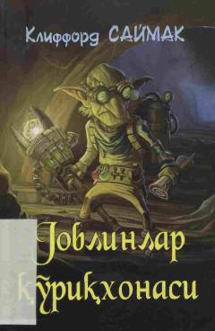

GQYer yuzidagi afsonaviy mavjudotlar va koinot sirlari haqidagi qiziqarli fantastik roman.
Amerikalik yozuvchi Klifford Saymakning ushbu romanida Yer sharida insonlardan avval paydo bo'lgan afsonaviy mavjudotlar — elflar, trollar va goblinlar haqida hikoya qilinadi. Asar o'quvchini koinotning sirlari va tasavvur olamining cheksiz imkoniyatlari bilan tanishtiruvchi ajoyib fantastik sarguzashtdir.